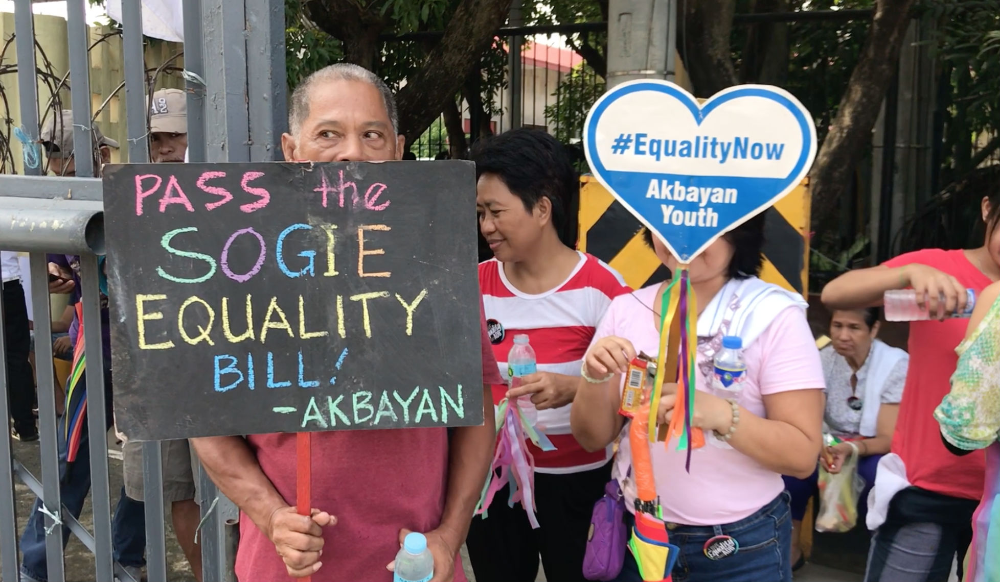

A collection of written essays and reports exploring how gender is performed, negotiated, and understood through
communication—from intimate conversations to institutional policies, from digital communities
to pop culture critique.
Hi there! This little corner of the web holds five essays I wrote for my Gender and Society class—pieces that
started as assignments but ended up becoming something more personal. They look at how we talk about gender
in everything: from food vlogs and pop songs to Discord chats and school policies here in the Philippines.
At first, I just wanted to “finish the requirement.” But the more I listened—to dialogue, lyrics, even my own
silence—the more I realized how much of who we are gets shaped by language. Not just in big declarations, but
in the small stuff: who gets to speak, how we express joy or doubt, and what kinds of identities our words
make room for (or leave out).
I’m still figuring things out myself—about gender, about voice, about what it means to belong. But writing
these helped me pay closer attention. Maybe reading them will do the same for you.
Go ahead and pick an essay from the menu above—or tap one of the buttons below to start browsing. No pressure.
Just take a look, and maybe find something that sticks.
fitterkarma - Kalapastangan | A favorite song of mine as of late (No connection to the rest of the portfolio lol)
Discourse Analysis: Gender, Interaction, and Power
Video: EATING ONLY FILIPINO FOOD FOR 24 HOURS!! – Isaac & Andrea Vlogs
This discourse analysis examines a naturalistic interaction between Andrea and Isaac in their vlog titled
"EATING ONLY FILIPINO FOOD FOR 24 HOURS!!". The segment captures an unscripted, intimate exchange as the
couple samples a variety of Filipino dishes—from Tapsilog breakfast to Kare-kare and Sinigang. Their dialogue
offers a window into how gender is linguistically performed, how conversational control is negotiated, and how
relational power and politeness shape everyday talk in informal digital media.
Authentic Filipino Cuisine (Paborito ko to hehe)
Gender Expression Through Language Choices
Andrea's speech is rich in affective language and evaluative intensity. She frequently uses interjections
("Oh my God"), hyperbolic praise ("This is so freaking good"), and rhetorical questions ("Why have I never
had garlic rice like this before?"). These features function not only to express personal delight but also
to construct a shared emotional experience with both Isaac and the audience. Her language aligns with patterns
often associated with feminine speech styles: prioritizing connection, expressivity, and inclusive enthusiasm
("You guys need to try tapsilog!").
Isaac, by contrast, adopts a more restrained and evaluative stance. His contributions are often grounded in
sensory observation or personal preference: "It's got like a sweet taste," or "I don't usually order soups
at restaurants." When expressing skepticism, he uses mitigation: "I wouldn't say it's not good, but it's
definitely not the best Filipino dish I've ever tried." This cautious phrasing reflects a tendency in
masculine-coded discourse to avoid overt negativity while preserving relational harmony.
Turn-Taking and Interactional Control
Andrea initiates nearly all topics—naming dishes, announcing transitions between meals, and prompting Isaac
to try new foods ("Let's try this one"). She holds the primary narrative role, consistent with her position
as co-creator of the vlog and its main narrator. Isaac rarely introduces new topics; instead, he responds to
her prompts with brief assessments or affirmations ("Yeah," "Mhm," "That's fire").
There are minimal interruptions, and when overlaps occur—such as during the sinigang portion ("Can you stop
taking it? No, put it in the middle")—they serve pragmatic coordination rather than conversational dominance.
Andrea maintains discursive leadership without overtly silencing Isaac; he willingly follows her lead,
indicating a consensual distribution of roles.
Politeness Strategies and Stance-Taking
Both speakers consistently use positive politeness, reinforcing solidarity through shared enjoyment and mutual
validation. Andrea frequently seeks alignment: "Right?" "Did you really think it wasn't going to be good?"
Isaac reciprocates with agreement and light humor ("You're about to drink it all").
However, their approaches to criticism differ. Andrea offers unreserved praise but avoids negative judgment.
Isaac, when faced with a less appealing dish (Kare-kare), carefully softens his critique with hedges and
indirect phrasing. This contrast suggests a gendered difference in comfort with expressing disapproval.
Power Relations and Relational Dynamics
Power in this interaction is not hierarchical but role-specific. Andrea wields narrative and agenda-setting
authority—she decides what to eat, when to film, and how to frame the experience. Isaac operates as a
responsive, supportive participant, offering reactions that validate her curation. Yet this is not
subordination; his contributions are valued, and his opinions are solicited.
Notably, both speakers reference cultural and familial connections ("my grandma used to make this," "something
your Lola would make"), grounding their experience in shared intimacy rather than performance alone.
Interpretation: Gendered Communication in Contemporary Digital Contexts
This exchange challenges rigid binaries of gendered communication. Andrea embodies assertiveness typically
coded as masculine—she directs, evaluates, and owns her expertise—while simultaneously using affective,
rapport-building language coded as feminine. Isaac demonstrates emotional attunement and receptivity often
associated with feminine styles, even as his speech remains measured.
The interaction reflects a negotiated, post-traditional gender dynamic common in digitally mediated, peer-based
relationships. Rather than reinforcing dominance, language here serves to co-construct intimacy, curiosity,
and cultural appreciation. In sum, gendered communication is not static but situated, relational, and
performative.
The song "gigolo" by bbno$ features a male narrator who proudly identifies as a "certified gigolo," engaging
in romantic or sexual relationships primarily for material benefit. This portrayal inverts the familiar cultural
narrative in which women are depicted as "gold diggers" or financially dependent on men. Here, the man leverages
his physical appeal—described as "pretty boy"—to receive luxury items, travel, and financial support from implied
older or wealthier female partners.
Women in the song are represented almost exclusively as affluent benefactors. They are shown funding the narrator's
lifestyle, such as putting him "on her tab" or gifting high-end watches. However, they lack individuality or
emotional depth; they exist solely as enablers of his consumption. There is no exploration of their desires,
motivations, or agency beyond their role in this transactional dynamic.
Stereotypes and Biases
The song both challenges and reproduces gendered stereotypes. It subverts the common "sugar baby" trope by placing
a young man in the role typically assigned to women receiving financial support in exchange for companionship.
This challenges the assumption that only women commodify intimacy for material gain.
At the same time, the lyrics perpetuate a hyper-materialistic view of relationships. Both men and women are reduced
to functional roles: men as sexual commodities, women as financial providers. Lines such as "Throw me in her will,
so I'm pickin' out her coffin" introduce a darkly humorous yet ethically ambiguous suggestion of manipulation and
emotional detachment.
Linguistic Cues and Framing
The lyrics use irony, braggadocio, and youth-oriented slang to present the gigolo lifestyle as aspirational and
entertaining. Phrases like "certified gigolo" and "pretty boy anthem" reframe a once-stigmatized identity as
trendy and self-empowered.
Wealth is consistently glorified through metaphors such as "blue chips," "caviar off a strip," and "trust fund baby,"
all of which celebrate excess without critical reflection. The use of nonstandard grammar ("He don't") and contemporary
slang creates a sense of casual authenticity, aligning the song with youth culture.
"Reinforcement or Challenge?" to Gender Norms
"gigolo" partially disrupts traditional gender norms by centering a man in a role historically coded as feminine.
It openly mocks rigid masculinity by celebrating vanity, luxury consumption, and emotional detachment as markers
of success.
However, the song ultimately reinforces a binary and commodified understanding of gender. Men are valued for their
bodies and sexual utility; women for their wealth and willingness to spend. Neither party is seen seeking authentic
emotional connection. While the track playfully inverts the "man as provider" expectation, it does so by adopting
the same objectifying logic historically used against women.
Conclusion
"gigolo" presents a satirical, gender-flipped fantasy that prioritizes entertainment over social critique. It reflects
a cultural moment in which traditional roles are mocked and reversed, yet not meaningfully reimagined with greater
humanity, reciprocity, or equality. The result is a catchy, self-aware performance that challenges surface-level
norms while leaving deeper structures of commodification intact.
Online Language Observation: Gendered Communication in a Filipino Online Chat
Platform: Discord (Filipino Gaming & Social Server)
This analysis examines a segment of asynchronous discourse extracted from a public-facing Discord server with
approximately 12,000 members. The server functions as a social and gaming-oriented community primarily composed
of Filipino youth aged 16 to 26. Discord was chosen as the observation site due to its widespread use among young
Filipinos for real-time communication and its semi-public yet identity-anchored environment.
Digital spaces shape future expressions of self
The transcript analyzed spans 57 minutes and includes 42 messages from 16 distinct participants. No prompts or
interventions were introduced; the data reflects organic exchanges around personal desires, gaming references,
humor, and relational commentary. Gender was inferred based on linguistic markers such as kinship terms ("kuya"),
emotive phrasing, and politeness particles ("po").
Differences in Language Use Among Genders
Female participants consistently employed emotionally expressive language, vulnerability, and politeness strategies.
Sel's opening message, "Gusto ko na magpa tattoo kasi baka magalit mommy ko 😭," illustrates this pattern by combining
personal agency with familial concern and an emoji signaling distress. Female speakers also frequently used Tagalog
honorifics such as "po" and softened requests, aligning with established norms of relational harmony in Filipino
communicative culture.
Male participants, by contrast, favored brevity, humor, and gaming-oriented phrasing. They engaged in playful ridicule
accompanied by exaggerated laughter ("WHAKAKAJSHHAHAJAAHA"). This reflects a tendency to manage social bonds through
jest rather than disclosure. Emoji use was rare among male speakers; instead, they relied on capitalization, slang,
and allusion to shared gaming experiences to signal affiliation.
Gender-Based Conflicts or Misunderstandings
No overt conflict emerged along gender lines, yet subtle asymmetries in emotional responsiveness were evident. When
Sel asked "Comfort mo nga ako :(," the conversation shifted toward humor and gaming rather than affective support,
suggesting that emotional appeals from women may not always receive the empathetic engagement they seek. In contrast,
when Jon expressed disillusionment about adult responsibilities, Sevi responded with validation and lighthearted
encouragement, reinforcing traditional caregiving dynamics even in digital settings.
The Role of Semi-Anonymity and Platform Affordances
Although Discord does not enforce real-name policies, the persistent use of usernames creates a sense of continuity
and accountability. This semi-identified environment encourages code-switching. Participants fluidly blend English,
Tagalog, and internet vernacular depending on audience and intent. Gender appears to influence this code-switching:
women more often adopt polite or "cute" registers when making requests, while men maintain a consistently casual tone.
Inclusivity and Exclusion in Digital Discourse
The discourse operates within a largely heteronormative and cisnormative framework, with no explicit references to
LGBTQIA+ identities or nonbinary language. While no exclusionary language was observed, the absence of gender-diverse
expression suggests limited representation in this particular space. Nevertheless, the environment remains socially
cohesive, with women actively initiating topics, though often conforming to culturally prescribed modes of femininity.
Key Insights
This observation reveals that gendered communication persists in digital Filipino youth spaces not through overt
rules but through culturally embedded linguistic habits. Discord's affordances recontextualize rather than erase
gender norms. Crucially, while role flexibility exists, responses often reinforce traditional dynamics. The findings
support broader scholarship indicating that digital platforms reproduce social structures even as they enable new
forms of expression.
Policy Reflection: Gender Inclusivity in DepEd's Child Protection Policy
Policy: DepEd Order No. 40, s. 2012: DepEd Child Protection Policy
Focus: Gender Inclusivity and SOGIE Protections in Philippine Education

Policy shapes student experience and identity formation
In many Philippine classrooms, gender is not something that is openly negotiated—it is simply assumed. Students
wear uniforms according to the sex marked on their registration forms, answer to names that were never questioned,
and move through school life without ever being asked how they truly understand themselves. For some, this unspoken
certainty aligns with their inner sense of self. For others, it creates a quiet dissonance: not a crisis, not a
rejection, but a lingering uncertainty about whether the gender they live by is the one that fully fits.
The Department of Education's Child Protection Policy (DepEd Order No. 40, s. 2012) prohibits gender-based
discrimination and commits to a safe, respectful learning environment. Yet it frames gender exclusively within a
binary structure and omits any reference to sexual orientation, gender identity, or expression (SOGIE). As a result,
students who do not experience their gender in straightforward terms find no explicit affirmation in the policy
that governs their daily school life.
This gap manifests in subtle but cumulative ways. Teachers sort students by "boys" and "girls" without alternative
options. Attendance sheets list only legal names. Guidance sessions on self-identity revolve around moral behavior
rather than personal exploration. In such an environment, students learn that conformity is the price of peace.
There is no hostility, only silence—and silence, in the absence of inclusive language, becomes a form of exclusion.
To address this, DepEd must revise its policy to explicitly include SOGIE protections and provide clear, practical
guidance for schools on gender inclusivity. This includes allowing students to use preferred names informally,
offering gender-neutral participation options in activities, and training educators to recognize that not all
gender-related distress is visible or vocal.
A truly protective policy does not require students to declare their identity to deserve respect. It creates space
for those who are still wandering, still wondering, to exist without having to first explain themselves. In a system
that prides itself on "matatag, magalang, at mapagkumbaba" values, the least it can offer is the dignity of possibility.
Final Synthesis: Of Body and Mind, Of Gender and Self
From here to the future, I am myself realized and free
Before this course, I saw gender in communication as a set of predictable patterns—something you could neatly
categorize based on who was speaking. Over time, through close readings of everyday conversations, media texts,
digital interactions, and institutional policies, that certainty dissolved. What emerged instead was a far more
complex picture: language doesn't just reflect gender but shapes it, negotiates it, and sometimes conceals it
behind the guise of neutrality.
What struck me most was how often inclusion is assumed where it isn't actually practiced. In casual vlogs, in
song lyrics, in group chats among peers, and even in policies meant to protect students, gender was either
flattened into a binary or treated as irrelevant—precisely because it was never named. I came to see that silence
isn't neutrality; it's a form of erasure that privileges those who already fit comfortably within existing categories.
While I'm still charting myself, still moving through the world without overt friction, this course made me realize
that my own quiet uncertainty about gender isn't a lack of clarity—it's a valid position in itself, one shared by
many who navigate identity without needing to declare it loudly.
The task that stayed with me longest wasn't the one with the sharpest analysis, but the one that asked me to look
inward: how does all this relate to who I am, and what I'm building? As an IT student, I used to think design was
about aesthetics and function. But I understand it's also about ethics. Every form I code, every interface I structure,
every dropdown menu I create carries assumptions about who users are and who they're allowed to be.
Language lives in those small choices. And if I've learned anything, it's that the most inclusive spaces aren't
those that demand answers, but those that make room for the questions.
This journey didn't give me a label or a resolution. But it gave me something more useful: the ability to listen
more carefully to others, to language, and to the quiet, persistent voice within that's still figuring things out.
And in a world that often demands certainty, I've learned there's power in simply holding space for the not-yet-known.
References
Androutsopoulos, J. (2011). Language change and digital media: A review of conceptions and evidence. Working Papers in Urban Language and Literacies, 70.
Boyd, D. (2014). It's Complicated: The Social Lives of Networked Teens. Yale University Press.
Department of Education. (2012). DepEd Order No. 40, s. 2012: DepEd Child Protection Policy.
Herring, S. C. (2003). Gender and power in online communication. In J. Holmes and M. Meyerhoff (Eds.), The Handbook of Language and Gender (pp. 202–228). Blackwell.
Kiesling, S. F. (2005). Homosocial desire in men's talk: Balancing and re-creating cultural discourses of masculinity. Language in Society, 34(5), 605–627.
Nakamura, L. (2008). Digitizing Race: Visual Cultures of the Internet. University of Minnesota Press.
Tannen, D. (1990). You Just Don't Understand: Women and Men in Conversation. William Morrow.
Tayao, M. L. (2005). The Filipino as a language learner. In A. Bautista and T. Gonzalez (Eds.), Philippine English: Linguistic and Literary Dimensions (pp. 55–70). University of the Philippines Press.
UNDP and USAID. (2014). Being LGBT in Asia: The Philippines Country Report. United Nations Development Programme.
UNESCO. (2019). Guidelines for Gender-Responsive School Systems. Paris: UNESCO Publishing.
This is me :o
About Me
Hi! I'm James Miro R. Orte—a 19-year-old BSIT student at Dalubhasaan ng Lungsod ng Lucena,
currently in my second year of college and trying to make sense of things one assignment at a time. This little
collection of essays you've just read? Yeah, it's for my Gender and Society subject—but it's also become
something more personal than I expected.
When I first got into college, I thought, "I've done high school, how much harder could this be?" Turns out…
pretty hard. Not just in terms of workload, but in the quiet questions that start showing up when you're finally
on your own: Who am I? What do I believe? And yeah—what even is gender, really?
Writing these pieces pushed me to look closer—at vlogs, songs, group chats, even DepEd policies—not just as
texts to analyze, but as mirrors of how we talk, relate, and sometimes hide. I still don't have all the answers
about my own identity. And that's okay. What matters is staying open-minded and kind—to myself and others.
Outside of coding and cramming for IT quizzes, I'm the kind of person who believes college isn't just about
grades. It's about staying up way too late talking about nothing, learning to cook something other than instant
noodles, saying "no" when you're stretched too thin, and saying "hi" even when you're shy. It's messy, awkward,
and beautiful—and I'm just trying to show up for it as honestly as I can.
Thanks for reading. I hope something here stuck with you—even for a moment.